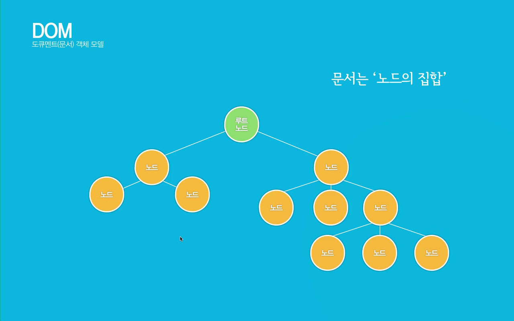

자바스크립트 내장객체_5문서(document)객체
DOM(Document Object Model)은 넓은 의미로는 웹브라우저가 html을 인식하는 방법이고, 좁은 의미로는 웹문서안에 있는 요소(객체)들의 집합이다.
웹브라우저(크롬, 사파리, 파이어폭스, 오페라, 익스플로러, edge, 모바일 브라우저)마다 DOM구현이 호환되지 않아서 W3C에서 DOM에 대한 표준규칙을 작성하였다.
1. DOM tree 구조의 이해



2. document객체의 속성 종류
- domain - 현재 문서가 있는 서버의 도메인 이름
- title - 현재문서의 제목
- bgColor - 문서의 배경색
- fgColor - 문서의 글자색
- linkColor - 문서의 링크 글자색
- alinkColor - 하이퍼링크된 글자를 클릭하였을때 색상
- vlinkColor - 하이퍼링크된 글자를 누르적있는경우 적용되는 색상
- anchors - 문서의 anchor들을 배열
- cookie - 쿠키에 대한 정보
- url - 문서의 url주소
3. document객체의 메서드 종류
- document.open() - 데이터를 보낼 준비
- document.close() - 문서에 데이터 출력을 마무리함.
- document.clear() - 브라우저에서 문서를 지움.
- document.write() - 문서에 데이터내용을 출력함.
- document.writeln() - 문서에 줄(line)바꾸기를 포함하여 데이터를 출력함.
4. 자바스크립트에서 선택자 사용하기
- 태그명으로 선택하기 : document.getElementByTagName('태그명'); => 유사배열로 반환(html collection) for문 돌리기
- 아이디명으로 선택하기 : document.getElementById('아이디명'); => 단일값으로 반환
- 클래스명으로 선택하기 : document.getElementByClassName('클래스명'); => 유사배열로 반환(html collection)
- css선택자로 선택하기
- document.querySelector('header #logo'); => 단일값으로 반환
- document.querySelectorAll('nav a'); => 유사배열로 반환(NodeList)
실습1. 현재 작성중인 html문서의 정보 알아보기
실습2. 버튼 클릭시 문서안의 글자색, 배경색 변경하기(다크모드)
실습3. 버튼 클릭시 문서안의 h3태그만 선택하여 글자색 '빨강'으로 변경하기
실습4. 버튼 클릭시 li태그만 선택하여 글자색 '파랑'으로 변경하기